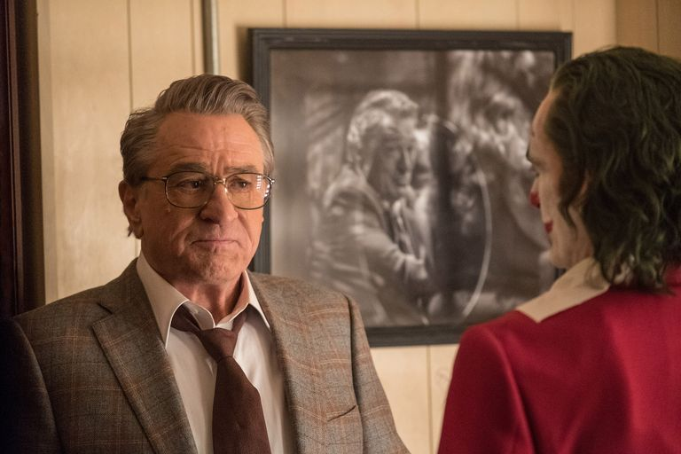

Premios
3 Curiosidades sobre la pelicula "Joker"
Joaquin Phoenix tuvo que perder cerca de 25 kilos
El de Joaquin Phoenix es uno de los últimos nombres que se suma a esa famosa lista de actores que engordaron o adelgazaron drásticamente para alguna película, por exigencias del guion. Y es que el actor tuvo que perder cerca de 25 kilos para interpretar a este protagonista. Declaró: "Una vez que alcanzas el objetivo, todo cambia. Lo más difícil es levantarse todos los días y estar obsesionado con perder 150 gramos, ¿no? Y entonces acaba siendo un trastorno. Lo que había esperado fueron todos esos sentimientos de insatisfacción, hambre, cierto tipo de vulnerabilidad y debilidad; pero no anticipé la fluidez que sentí físicamente. Podía mover mi cuerpo de una manera que no había podido antes. Y eso se prestó a algunos de los movimientos físicos que surgieron como parte importante del personaje".
Joaquin Phoenix y Robert De Niro mantuvieron una relación algo conflictiva
Al principio del rodaje se produjo un choque entre los dos 'pesos pesados' que encabezan el reparto de 'Joker', Phoenix y Robert De Niro. El actor de 'El irlandés' (una de las películas originales más vistas de Netflix) sigue la costumbre tradicional de hacer una lectura de guión, un proceso que a Phoenix no le gusta. Pero De Niro insistió y su compañero accedió a regañadientes, murmurando durante toda la lectura. Al parecer, resolvieron las diferencias entre ellos enseguida, sin llegar nunca a formar una de esas parejas de actores que no se soportan, pero lo cierto es que en el set de rodaje casi nunca se hablaron, más allá de lo justo que tenían que compartir en las escenas. Ellos dicen que su desacuerdo es solamente profesional y es más, Joaquin Phoenix sigue asegurando que De Niro es su actor favorito.
Joaquin Phoenix: demasiada intensidad
De todos es conocido que Joaquin Phoenix no es un actor de trato fácil, de hecho, es uno de esos actores con los que es difícil trabajar. Lo confirmó Todd Phillips al 'New York Times', donde aseguró que la estrella "perdió la compostura en el set, a veces ante el desconcierto de sus compañeros de reparto". "En medio de una escena, si dice que se va, se va", aseguró el director. "Y el pobre actor que estaba con él pensaba que era su culpa, y no era por su culpa; siempre era por él, porque no sentía lo que estaba haciendo".
Phoenix siempre regresaba tras descansar un poco. Hubo un momento especialmente tenso y el realizador tuvo que decirle: "Saldremos a caminar y volveremos y lo haremos". La única persona a la que el actor nunca dejó tirado en medio de una escena fue precisamente, a Robert De Niro, quien dijo de él en 'The Times' que era un "profesional consumado" en el set: un actor "muy intenso en lo que estaba haciendo, como debería ser".